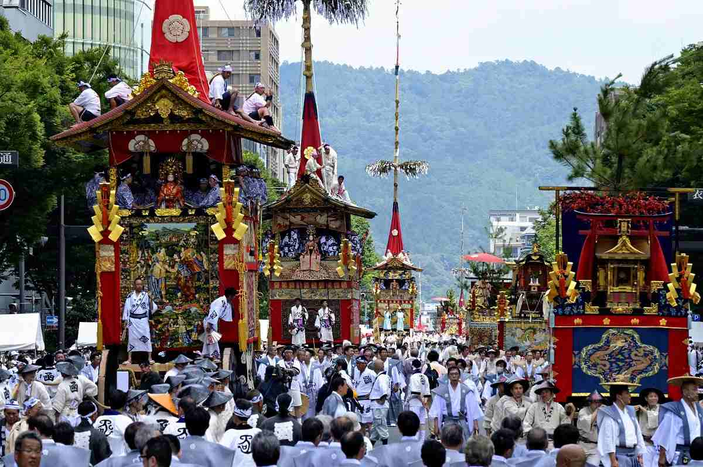
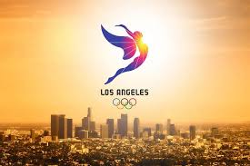
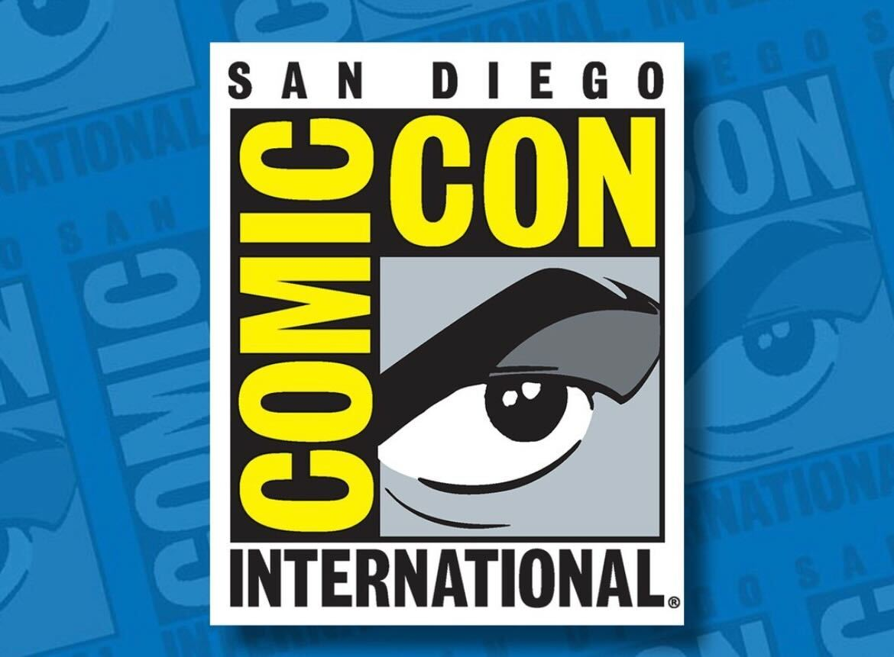

Gion Matsuri  Gion Matsuri festival in Kyoto Gion Matsuri is one of Japan's most famous festivals, held in Kyoto throughout July and centered around Yasaka Shrine. The highlights include the grand Yamaboko Processions on July 17 and 24, where massive, beautifully decorated floats parade through the streets. Leading up to these parades, the Yoiyama Evenings offer a lively atmosphere with food stalls, performances, and illuminated floats. Originally a purification ritual to ward off epidemics, the festival remains deeply rooted in tradition while attracting visitors from all over the world.
Summer Olympic Games  Los Angeles 2028 Summer Olympics The Summer Olympics is a global multi-sport event held every four years, bringing together athletes from around the world to compete at the highest level. Featuring a wide range of sports, from athletics and swimming to gymnastics and team events, the games promote unity, excellence, and international cooperation. The host city showcases its culture through the opening and closing ceremonies, while the competition fosters records, inspiring moments, and unforgettable achievements.
Comic Con  Comic-Con International Comic-Con is a major pop culture convention that celebrates comics, movies, TV shows, gaming, and fandoms from around the world. Held annually in cities like San Diego, it features exciting panels, exclusive previews, celebrity appearances, and cosplay showcases. Fans gather to explore the latest in entertainment, meet creators, and connect with fellow enthusiasts. With its mix of industry reveals and fan-driven events, Comic-Con has become a must-attend celebration of geek culture.